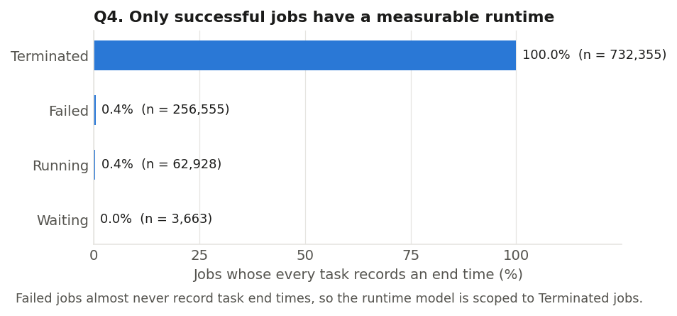
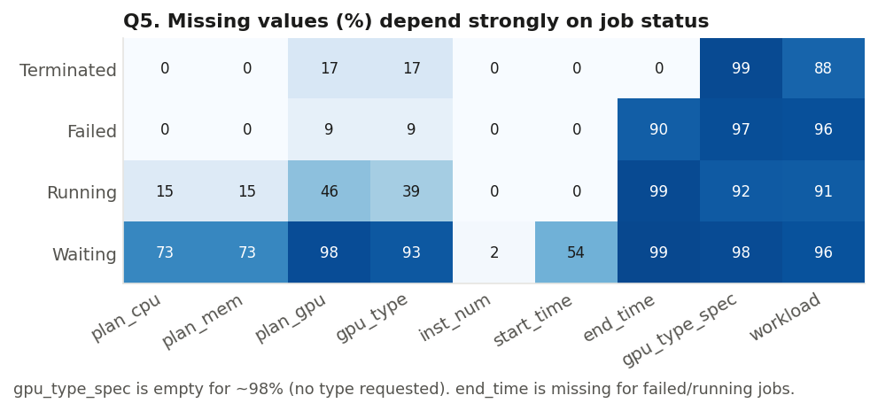
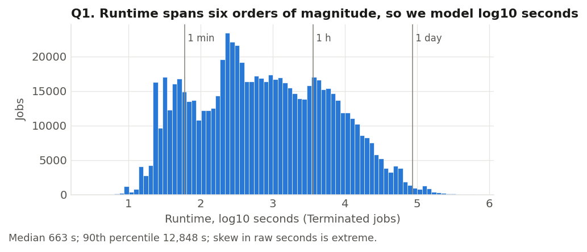
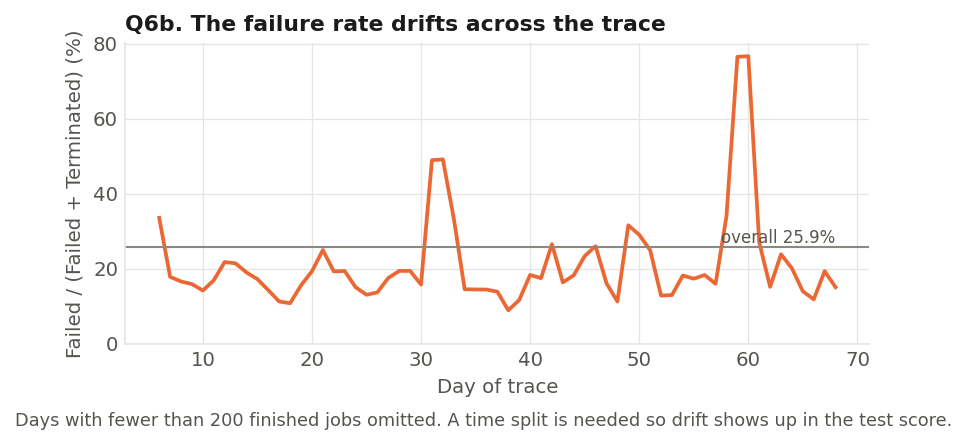
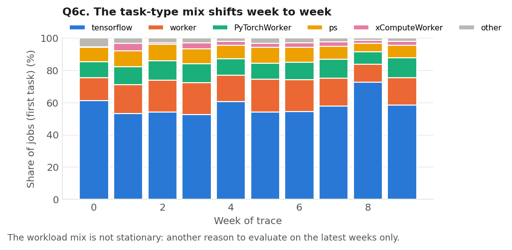
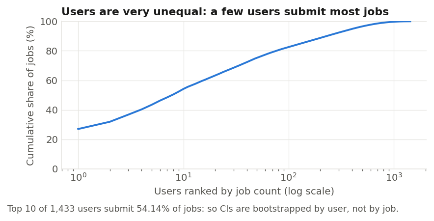

Can a GPU cluster predict how long a job will run, and whether it will fail, from the request alone?
We use one million jobs from Alibaba's production AI cluster to test whether a model that sees only what is known at submission beats the obvious rule: assume each user's next job behaves like their past ones.
difference , 95% CI
difference +, 95% CI
difference 95% CI
Test period: the last 30% of the trace (days 56–69), scored once on after every choice was frozen. Intervals resample users, not jobs. Sensitivity analysis (planned in advance): without the single heaviest user, 48% of finished test jobs, failure PR-AUC is 0.614 vs 0.475 at a base rate of 0.151. See Results.
The question, precisely
For a job submitted to a shared GPU cluster, using only information known at the moment of submission, can we predict
- runtime: how long the job will run if it succeeds, in seconds (modelled as log10 seconds), and
- failure: whether it ends as Failed rather than Terminated (Alibaba's label for success),
more accurately than a per-user baseline? And which information beyond the user's history (requested resources, task type, time of day) actually helps?
One row is one job. The prediction is made at the job's submission timestamp. Inputs are limited to what the user asked for and what had already happened on the cluster: the requested CPU, memory and GPUs; the task roles; the requested GPU type; the hour and weekday; and the history of jobs by the same user or the same script group that had finished before this submission.
Limits of the claim. This is one production cluster over 69 days in mid-2020. The results describe shared-cluster ML jobs like these, not all GPU workloads. The models predict; they do not explain why jobs fail, and they are not a scheduling guarantee. Runtime is only defined for jobs that succeed (failed jobs almost never record an end time), so the runtime claim is "how long it runs if it works".
2Data
The Alibaba PAI GPU cluster trace 2020 records jobs on a production cluster of more than 6,500 GPUs in July–August 2020 (Weng et al., NSDI '22). We use three of its tables: jobs (submit time, end time, status, user), tasks (each job's roles and requested CPU, memory and GPUs), and group tags (the requested GPU type and a hash of each job's script and parameters). We downloaded the official files and checked every SHA-256 checksum against Alibaba's README.
We re-derived every count rather than trusting the proposal. The trace has 1,055,501 jobs from 1,433 users over 68.9 days: 732,355 Terminated, 256,555 Failed, 62,928 Running and 3,663 Waiting. Timestamps are shifted by a constant, but the README states that time of day and weekday (UTC+8) are preserved, so we use those and never the calendar date.
Access and responsible use. There is no formal licence; the maintainers allow research and study use and ask for a citation. We do not redistribute the data. This site shows only derived results and a small sample of test jobs with re-numbered IDs.
Quality checks that changed the project

Only successful jobs have a measurable runtime, so the runtime model is scoped to them.
Failed jobs record a task end time in 0.4% of cases (10% have a job-level end time). A runtime model trained on "jobs with an end time" would really be a model of successful jobs, so we say that openly instead.
Missing values depend on status, so missingness itself carries information.
The requested GPU type (gpu_type_spec) is empty for 98% of jobs, meaning no type was requested. plan_gpu and gpu_type are missing together for 17% of tasks; plan_gpu has no zeros, so missing means "no GPU requested".
Text version
Terminated: plan_gpu 17%, gpu_type 17%, end_time 0%, gpu_type_spec 99% empty. Failed: plan_gpu 9%, end_time 90%. Running: plan_cpu 15%, plan_gpu 46%, end_time 99%. Waiting: plan_cpu 73%, start_time 54%, end_time 99%.

Runtime spans six orders of magnitude, so we model log10 seconds.
On a log scale an error of 0.3 means "off by a factor of 2" for any job length. Median 11 minutes, 90th percentile 3.6 hours.
The failure rate drifts across the trace, from 9% to 77% per day.
The spike on days 59–60 comes mostly from one user: 284,867 jobs in the trace (27% of all), 93% of their burst jobs failed. This falls in our test period. We kept the split rule fixed and report the effect openly (see Results).
The workload mix also shifts week to week.
TensorFlow jobs are 53–72% of a week's jobs; distributed ps+worker jobs vary between 11% and 21%.
A few users submit most jobs, so uncertainty is measured by resampling users.
Jobs from the same user are not independent. Treating 285,306 test jobs as independent would make every interval far too narrow.Two more checks: the README describes a queue wait between job submission and the first task launch, but in this release that gap is exactly 0 seconds for every finished job, so queue wait cannot be studied. Running jobs are not concentrated at the end of the trace (4.2% of the last week's jobs vs 6.6% in the first 60 days), so they look like long-lived jobs rather than jobs cut off by the trace end; we drop them because their outcome is unknown.
3Preprocessing
One row per job. A job can have up to four tasks (for example a parameter server and workers). We sum each task's requested CPU, memory and GPUs times its instance count, keep the per-instance maxima, and record the set of roles (22 distinct sets) and the main role (the task with the most GPUs). Row counts were checked after every join: 1,055,501 jobs in, 1,055,501 out. We drop the 3,663 Waiting jobs that have no submission time.
History, without looking ahead. For each job we look up the same user's and the same script group's past jobs: how many had finished, their median runtime, their failure rate, and how many jobs the user submitted in the last hour. Only jobs whose outcome was known before this submission count. A job submitted earlier but still running tells us nothing yet. Failed jobs with no recorded end are treated as known 24 hours after submission, which is later than the true end for 97.2% of the failed jobs whose end we do know (the other 2.8% ran longer; see Limitations). We verified every history feature by brute force on 600 random job/key pairs: 0 mismatches.
Learned steps use training rows only. The category lists (the 200 most frequent users plus an OTHER level), imputation medians, scaling and one-hot levels are fitted inside each model's fit, on that fold's training rows. Missing CPU or memory is left missing for the trees and median-imputed (with a missing flag) for the linear models.
Leakage audit: every column, allowed or not
| table | column | known at submission? | used as | why |
|---|
The assigned GPU type is the scheduler's decision, made after submission, so headline models use only the requested type. A separate sensitivity run shows what the leaked field would add: runtime MAE → , failure PR-AUC → .
How one prediction is made
Step through a real test job, from the raw request to the comparison with what actually happened.
The request as submitted
Leakage filter: only what is known at submission
History lookup: only jobs that had finished
Model prediction
Range: 5–95% quantiles, widened by the conformal offset
Compare with the baseline and the truth
Arrow keys step back and forward when this panel has focus.
4Baselines and methods
Baselines: the bar to beat
Users repeat similar jobs, so the obvious rule is strong. For runtime, the per-user baseline predicts the user's median runtime over their previously finished successful jobs. For failure, it predicts the user's past failure rate. Both fall back to the training-set median or rate for users with no history. On the validation folds this baseline already reduced runtime error from 0.766 (global median) to 0.569, and raised failure PR-AUC from 0.194 (no skill) to 0.494. A smoothed per-user failure rate was tried and was no better.
Methods
Ridge regression (runtime) and logistic regression (failure) are the simple references. They model the log-runtime, or the log-odds of failure, as a weighted sum of features with a penalty on large weights. They cannot capture interactions such as "GPU count matters more for distributed jobs" unless we add them by hand.
Gradient-boosted trees (scikit-learn HistGradientBoosting) add many small decision trees in sequence, each correcting the previous ones. They handle mixed numeric and categorical inputs, missing values and interactions directly. For runtime we use absolute-error loss, which targets the median and so matches the MAE we report.
Quantile trees predict the 5th and 95th percentiles of runtime, giving a range instead of a point. The raw ranges covered only 78–80% of validation-week jobs, against a 90% target. Following conformalised quantile regression, both ends are widened by an offset learned on the most recent validation week (0.18 log10, a factor of 1.5), which restored 88–91% coverage on the next week.
Keep the complex model only if it clearly wins. A tree replaces its linear reference only if it is better by more than 0.02 on the mean over folds and on every fold. For runtime the tree won (fold MAE 0.300 vs 0.352 for ridge). For failure it did not: logistic regression scored 0.709, the planned tree grid 0.644–0.676 (worse as trees grew), and a more regularised tree 0.711. So the failure model is logistic regression. Under drift, flexible trees learn patterns of the training weeks that do not carry over.
| task | configuration | score |
|---|
5Evaluation design
Split by time, decided first. Jobs are ordered by submission. The earliest 70% (up to day 55.2) is development data, the next 24 hours are an embargo used by nothing, and the rest (days 56.2–68.9) is the test set. Development labels must be known by the start of the test period, as they would be for a model deployed then. The split was committed to the repository before any model was fitted.
Tuning never sees the test set. All choices (features, models, hyperparameters, interval widening, threshold) were made on three walk-forward folds inside development: fit on everything before day 34, 41 or 48 and validate on the following week. The test set was scored exactly once, after the models were frozen; results/test_run_log.json records that run.
Why we split by time
Step through the timeline, then compare the same model scored with a random split.
Random split versus time split
Try this
- Switch to the random split and see the runtime error drop: the model looks better than it really is.
- Step to the folds: each one validates on a week the model has not seen, like the test period.
This comparison uses development data only (fold 3's fit and validation weeks, reshuffled for the random version), so the test set stays untouched.
How to read these metrics
- MAE on log10 seconds. The average size of a miss on a log scale. 10MAE is the typical error factor: an MAE of 0.30 means predictions are typically off by ×2.0 (too long or too short).
- RMSE squares misses before averaging, so it weighs the big misses more.
- Mean signed error keeps the sign: positive means the model predicts jobs as longer than they are. Drift usually shows up here first.
- Coverage is the share of jobs whose true runtime fell inside the predicted 5–95% range. It should be close to 90%.
- PR-AUC measures how well failures are ranked above successes. A model with no skill scores the failure base rate, not 0.5. Accuracy would be misleading: "never fails" is 74% accurate here.
- Brier score is the mean squared error of predicted probabilities; it rewards probabilities that are both sharp and honest. Calibration asks whether "30% risk" jobs fail about 30% of the time.
- 95% confidence intervals come from a paired bootstrap that resamples users 1,000 times. "Paired" means the model and the baseline are scored on the same resampled jobs, so the interval is for their difference.
6Results
Runtime. On successful test jobs, the tree's MAE is log10 s (a typical error factor of ) against () for the per-user baseline. The difference is , with a 95% interval of . RMSE: vs . Ridge regression scores and the global median . The 5–95% range covers of test jobs (raw quantiles alone: ).
Failure. On finished test jobs (base rate ), logistic regression reaches PR-AUC against for the per-user failure rate (difference +, 95% interval ). Brier score vs ; calibration error vs . At the threshold chosen on validation (), alerts have precision and recall .
Reading these together. Both models clearly beat the per-user baselines, and the 95% intervals for the differences exclude zero. The runtime gain is the more stable of the two: a typical error of ×2.2 instead of ×4.0, and the model is closer than the baseline on 68% of jobs. The failure result needs care. The test period's failure rate (39.8%) is about double development's (20.4%), and 48% of the finished test jobs come from the single heaviest user, whose burst failures are easy to recognise from recent history. The main result is the full test set: PR-AUC 0.923 against 0.542 for the baseline, at a base rate of 0.398. A sensitivity analysis, planned before any model was fitted, splits that user out. Without them, PR-AUC is 0.614 against 0.475 at a base rate of 0.151 (difference 95% interval [+0.08, +0.19]). For that user alone it is 0.966 against 0.530 at a base rate of 0.667. The model beats the baseline in both groups, but the size of the gain depends heavily on this one user, which is also why the full-set interval is wide ([+0.09, +0.42]). The split was not changed, and the exclusion was never used to choose or tune any model.
Two comparisons with the simple references: the runtime tree beats ridge (0.338 vs 0.385; difference interval [−0.087, −0.022]). For failure, logistic regression was chosen on validation. On the test set the regularised tree we did not choose would have scored 0.938, slightly higher. We report it but did not switch, because changing models after seeing test results would turn the test set into a validation set.
Try a job
Describe a job and read the final models' predictions. Every value comes from a grid precomputed with the actual test-time models; nothing is trained in your browser.
Try this
- Switch to a new user and watch the range widen: with no history the model leans on the request alone.
- Raise the GPU count for a ps+worker job, then do the same for a Jupyter task.
- Move the submit hour from 12:00 to 00:00 and see how little the time of day matters.
"Returning user" uses the median history of development-period users with history; individual users are never shown.
What each feature group adds
Add feature groups one at a time. Each bar is a model refitted with the groups so far, scored on the test set; whiskers are 95% intervals for the difference from the baseline.
Table version
| features | runtime MAE | vs baseline, 95% CI | failure PR-AUC | vs baseline, 95% CI |
|---|
The ladder is order-dependent: each group's gain is measured given the groups before it.
Does it hold up over time?
Error for each test day, model against baseline. Shaded strips mark the reporting bands.
| band | runtime MAE | baseline | diff 95% CI | signed error | coverage | failure PR-AUC | baseline | base rate |
|---|
The model beats the baseline in every band for both tasks; every runtime interval excludes zero. The errors are not flat, though. Runtime error rises in bands 2–3 (MAE 0.357 and 0.378, against 0.298 in band 1), the model starts to over-predict (signed error +0.10), and coverage slips to 86–88%. Failure PR-AUC falls from 0.92–0.98 in bands 1–2 to 0.51–0.58 in bands 3–4. That fall is mostly the base rate dropping from 44–59% to 15–19% (fewer failures make ranking harder), not the model breaking: it still beats the baseline there (0.582 vs 0.456, 0.507 vs 0.300) and its mean predicted risk tracks the observed rate (0.19 vs 0.19, 0.16 vs 0.15). In band 1 it under-predicts (0.33 vs 0.44), the same drift seen on the last validation fold.
Choosing the failure alert threshold
An alert could ask a user to check a job before it takes GPUs. Move the threshold to trade missed failures against false alarms.
GPUs of failed jobs caught
Calibration table
| mean predicted | observed failure rate | jobs |
|---|
Try this
- Push the threshold to 0.90: almost every alert is a real failure (99%), but fewer than half of the failures get one.
- Lower it to 0.05: 98% of failures are caught, but 70% of all jobs are flagged and 45% of alerts are false.
- Return to the chosen threshold and compare the cost per job with the baseline at the same threshold.
Seen and unseen users, and the heaviest-user sensitivity analysis
| slice | runtime jobs | runtime MAE | baseline | diff 95% CI | coverage | failure PR-AUC | baseline | base rate |
|---|
Almost every test job comes from a user already seen in development, and from a user with some finished history, so the "new user" slices are small (1,797 and 93 runtime jobs) and their intervals are wide. The model's advantage shrinks there (0.350 vs 0.402 for unseen users) because the baseline's per-user signal is gone as well, but it still beats the fallback. The heaviest user is 26% of runtime test jobs and 48% of failure test jobs. Without them runtime MAE improves to 0.279 (baseline 0.514) and coverage is 94%. For them alone, coverage falls to 73%: their runtimes in the test weeks were harder to bound than anything in development.
7Errors
Where it wins and loses
3,000 sampled test jobs (750 per band). Blue jobs are ones where the model was closer than the baseline; grey, where the baseline was closer. Click a job to see its inputs.
Click a point to see the job's inputs, both predictions and the truth.
Representative errors
Cases were chosen by fixed rules in src/error_analysis.py (largest misses in each direction, typical misses, a user with no history, a rare explicit GPU type, a case where the baseline did much better, and the most confident failure mistakes), not by hand.
Patterns across the errors. The biggest misses are extreme jobs: very short successes (under 10 s, where the baseline is off by ×15 on average and the model by ×2.4) and very long ones (over 28 h, under-predicted by about ×13). Errors grow with job length beyond 3 hours, and the model systematically under-predicts the longest jobs: signed error −0.34 for 2.8–28 h. Jobs that request an explicit GPU type (about 1% of the test period) are predicted worse than by the baseline for P100, T4 and V100M32 requests. They are too rare in training for the model to learn their behaviour. By task type, the model wins everywhere; its largest error is on PyTorch jobs (0.59 vs 0.84 for the baseline).
8Limitations
- Runtime is conditional on success. Failed jobs almost never record an end time, so the runtime model learned only from jobs that worked. For a job that will fail, the runtime prediction says nothing; read it next to the failure risk.
- The test period is dominated by one user. The heaviest user accounts for 48% of finished test jobs and drives the failure surge in band 2. Much of the headline failure PR-AUC (0.923, base rate 0.398) comes from how recognisable that user's burst is. In the pre-planned sensitivity analysis without that user it is 0.614 (base rate 0.151), and on that user's own jobs 0.966 (base rate 0.667). On a cluster without such a user, expect gains closer to the sensitivity number. The user-level bootstrap makes this visible as a wide interval.
- Drift. The failure rate in the test weeks (40%) is twice that of development (20%). The runtime model over-predicts in bands 2–3 and its coverage slips below 90%. The models were trained once; a deployed version would need regular retraining and recalibration.
- One cluster, 69 days, mid-2020. Results may not transfer to other clusters, schedulers, hardware or years. The trace's dates are shifted, so we cannot relate events to the calendar.
- Dropped jobs. Running and Waiting jobs (6%) are excluded because their outcome is unknown. They look like long-lived jobs rather than jobs cut off by the trace end, but their absence probably makes the longest jobs under-represented.
- History timing assumption. Failed jobs without a recorded end (90% of failures) are treated as known 24 hours after submission. Among failed jobs that do record an end, 2.8% ran longer than 24 hours, so a few percent of failures may enter the history features shortly before they were truly known. We tested a 72-hour lag on the validation folds (development data only). Runtime error barely moved (0.2995 → 0.3040), but failure PR-AUC fell from 0.709 to 0.690, mostly in the burst-dominated last fold. The per-user baseline fell by a similar amount (0.494 → 0.469), so the model's advantage held (+0.215 → +0.221). The absolute failure score therefore depends partly on how quickly past failures become visible; the comparison with the baseline does not. The rule affects history features only, never labels or the split.
- Prediction, not causation. Features like "submissions in the last hour" predict failure because failing users resubmit; they do not cause failure. The models do not explain why jobs fail.
- Not a scheduling guarantee. We did not simulate a scheduler. A 90% range is a statement about many jobs, not a promise for one, and using these predictions to change scheduling would itself change user behaviour.
- Limited tuning. The hyperparameter grids were small (8 tree settings per task, plus 2 regularised failure trees), and the number of boosting rounds was not tuned.
9Conclusion
Using only information available at submission, both questions have a positive answer on this trace. A gradient-boosted tree predicts the runtime of successful jobs with a typical error of ×2.2, against ×4.0 for the user's past median, and the gain holds in every test band and for seen and unseen users alike. Logistic regression ranks failures far better than the user's past failure rate: PR-AUC 0.92 against 0.54 on the full test set (base rate 0.40). In the pre-planned sensitivity analysis without the dominant user, it is 0.61 against 0.48 (base rate 0.15). The gain holds in both, but its size depends strongly on that one user.
What helps is history, not the request. Requested resources and task type alone do not beat the per-user baseline for runtime (MAE 0.622 vs 0.601). Adding user and script-group history is what moves the error (to 0.352), and time of day adds a little more (0.338). The assigned GPU type, which we excluded as leakage, would add almost nothing on top.
The most useful lesson for us was about evaluation. A random split would have reported a runtime error of 0.20 instead of 0.33, so the time split is what made the result believable. Flexible trees lost to logistic regression for failure on validation, because they learned patterns from the training weeks that did not repeat. And the quantile ranges needed a conformal correction to come close to their promised 90% coverage. A modest and carefully bounded claim is what the evidence supports.
10Reproduction
Everything runs from the public repository with Python 3.11+. The raw trace is downloaded by script and verified by checksum; it is never stored in the repository.
pip install -r requirements.txt
python scripts/fetch_data.py
cd src
python load_raw.py
python audit.py; python audit_plots.py
python build_table.py # one row per job + history features
python leakage_table.py
python split.py # prints the frozen split (results/split.json)
python baselines.py
python runtime_models.py; python runtime_intervals.py
python failure_models.py; python failure_tree_extra.py
python final_test.py # the single test run
python split_demo.py; python drift_analysis.py; python error_analysis.py
python export_site.py # writes docs/data/The split is defined in src/split.py and frozen in results/split.json. All seeds are 335. We re-ran the whole pipeline from a fresh clone: every reported metric matched the committed results (final_test.py --reproduce compares and never overwrites them). Every decision, with the reason and the alternatives rejected, is in the decision log.
Team and contributions
Shared: data fetch and audit, the one-row-per-job table, history features, the leakage audit, the split and evaluation design, baselines, the site and the README.
Saanvi Mundra: the runtime task: ridge reference, gradient-boosted regressor, quantile range and its conformal correction, the seen/unseen-user study, the "Try a job" panel and the runtime results and errors.
Suchi Shah: the failure task and the time-shift analysis: logistic reference, gradient-boosted classifier and its regularised extension, calibration, the alert threshold, the per-band drift analysis, the "Does it hold up over time" panel and the failure results and errors.
AI-use disclosure
We used Claude Code (Anthropic) as a coding assistant: writing and debugging scripts, drafting documentation and building this static site. Every modelling and evaluation decision is recorded with its reasoning in the decision log, and we checked the reported numbers against the code and data ourselves. We are responsible for all results.
Citations
- Q. Weng, W. Xiao, Y. Yu, W. Wang, C. Wang, J. He, Y. Li, L. Zhang, W. Lin, Y. Ding. MLaaS in the Wild: Workload Analysis and Scheduling in Large-Scale Heterogeneous GPU Clusters. USENIX NSDI 2022. Data: alibaba/clusterdata.
- F. Pedregosa et al. Scikit-learn: Machine Learning in Python. JMLR 12, 2011.
- Y. Romano, E. Patterson, E. Candès. Conformalized Quantile Regression. NeurIPS 2019.
- Fonts: Source Serif 4 (Adobe) and IBM Plex Mono (IBM), SIL Open Font License, served from this site. Charts are drawn with our own code; no external libraries are loaded.